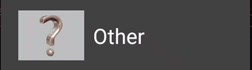
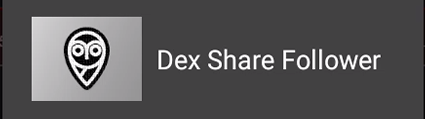
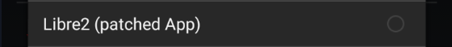
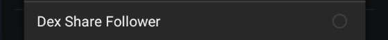
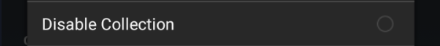

Data source
Scroll down until you see your sensor or usecase.
G5, G6, ONE and G7⌁
If you connect xDrip+ to your sensor (G5, G6 and ONE), you will not be able to upload to Clarity (use Nightscout or Tidepool). You might be able to use sharing through Dexcom share servers but it needs to be setup with the vendor apps first.
If you use the vendor apps (G5, G6, G7), you can connect xDrip+ through Dexcom Share as long as a follower has been setup.
When using BYODA (G6) if you've enabled Broadcast to xDrip+ you don't need a network connection to have data in xDrip+.

You can add xDrip+ to your current setup and select Companion app to have xDrip+ read BG from the vendor app notifications (G5, G6, G7, ONE).

And this is also possible if you use CamAPS.
Libre⌁
xDrip+ connects directly to Libre 2 EU, you can use Libre 1, Pro and 14 days US with a bridge device. Other Libre 2 and 3 sensors are not directly supported.
You can connect Libre 2 EU to xDrip+, adding OOP2. You cannot upload data to the vendor servers (use Nightscout or Tidepool).
Since Libre 1 don't have bluetooth, you need to add a bridge device. Some of these bridges also work with Libre 2 EU. Check your sensor doesn't require an OOP.
The patched app can send data to xDrip+.
For non-supported sensors you can also use Diabox or Juggluco, then broadcast data to xDrip+.
You can follow a Libre 3 with xDrip+.

Guardian and Minimed⌁
With a 640G/670G pump you need to get BG data from the pump using a glucometer connected to your phone with an OTG cable.
You can add xDrip+ to your current setup and select Companion app to have xDrip+ read BG from the vendor app notifications.

You can follow sensor data when shared through Carelink.

Bluetooth connection to a sensor or a bridge⌁
When connecting xDrip+ directly to a sensor, it will take care of the Bluetooth connection or to the Bluetooth device sending data from your device (called a bridge).
Warning
Do NOT try to use Android Settings -> Connections -> Bluetooth to connect!

If your bridge paired to Android, unpair it before continuing.
One device at a time
Sensors and bridges can only connect to one smartphone (or tablet) at a time, and only to one app at a time.
You should uninstall the vendor app in order to connect xDrip+ to your sensor or bridge.
If another device is connect to your sensor or bridge you should turn it off or disable the other app before trying to connect with xDrip+.
You cannot connect to two phones or applications. With an exception for G6: the second device can only be a receiver/connected pump or a BlueJay watch.
You should now see the the data source selection wizard.
If you don't, touching this button will display the wizard.

If the button is not visible you can display it using a long touch on the xDrip+ icon and enabling the Source Wizard Button.

Sensor selection⌁
The following sensors are supported directly by xDrip+:⌁
- G4 (with bridge) or G4 Platinum receiver
- G5

- G6 and One
- Libre (with bridge)

- Libre with patched SWR50 smartwatch

- Libre 2 (only EU)
- Medtrum A6/S7

The following sensors and features are supported with a companion app:⌁
- Libre 2 (only EU)

- Eversense

- 640G/670G pumps

- Build your own app (BYODA) for G6 sensors
- Aidex
See below GlucoRx/Aidex. - Companion app for G6, G7, One and CamAPS
See below.
Follower mode⌁
- xDrip+ Sync (requires Google Play Services)
- Nightscout and Diabox
- Dex Share
 - CareLink
Changing data source⌁
You can select another data source without using the wizard from the settings menu:
Menu / Settings / Hardware data source


G4 (with bridge) or G4 Platinum receiver


Libre with patched SWR50 smartwatch


640G/670G pumps, Eversense and Build your own app (BYODA)



Companion app for G6, G7, One and CamAPS

Web Follower for Libre 3

Disable Collection⌁
If you want to disable xDrip+.
